Mulher Amparada
Acesse rapidamente os serviços de emergência e os aplicativos do projeto.
Emergência
180
Violência contra a mulher
Central de Atendimento à Mulher
›
190
Polícia
Ligue para 190
›
192
SAMU
Ligue para 192
›
Aplicativos
Mulher Amparada
›

Gerenciador de Arquivos Do Mulher Amparada
›
Assistente de Voz Do Mulher Amparada
›